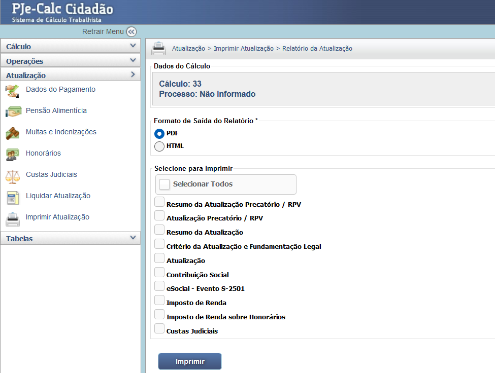

Manual Interativo de Cálculos Trabalhistas
Um guia completo e interativo para entender os cálculos na esfera judicial trabalhista.
Funcionalidade Imprimir Atualização
A função Imprimir Atualização, localizada no menu Atualização, permite gerar o relatório final do cálculo, essencial para juntada aos autos do processo (PJe). O relatório deve ser emitido após o cálculo ter sido liquidado e, se necessário, atualizado até a data-base desejada.
1. Formato de Saída e Seleção dos Dados
A primeira escolha é o Formato de Saída do Relatório, geralmente PDF, o mais adequado para juntada no PJe, mas o formato HTML também está disponível.
É possível selecionar quais informações farão parte do relatório final. Clique em "Selecionar Todos" para um relatório completo, ou marque as opções individualmente, conforme a necessidade.
2. Documentos Essenciais para Impressão
Os documentos mais importantes para a execução são:
- Resumo da Atualização: Apresenta o valor total liquidado, atualizado e as deduções.
- Atualização: O detalhamento da correção monetária e juros.
- Contribuição Social e Imposto de Renda: Detalhamento dos valores de encargos fiscais e previdenciários.
- Custas Judiciais: Detalhamento das custas processuais devidas.
- Critério da Atualização e Fundamentação Legal: Informa os índices e a base legal utilizados.
Após selecionar os documentos desejados, clique no botão "Imprimir" para gerar o arquivo final.